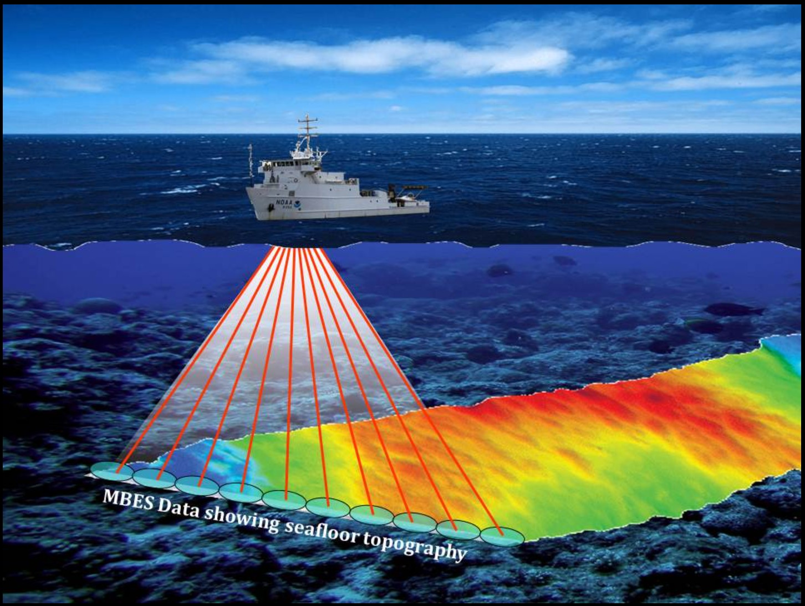
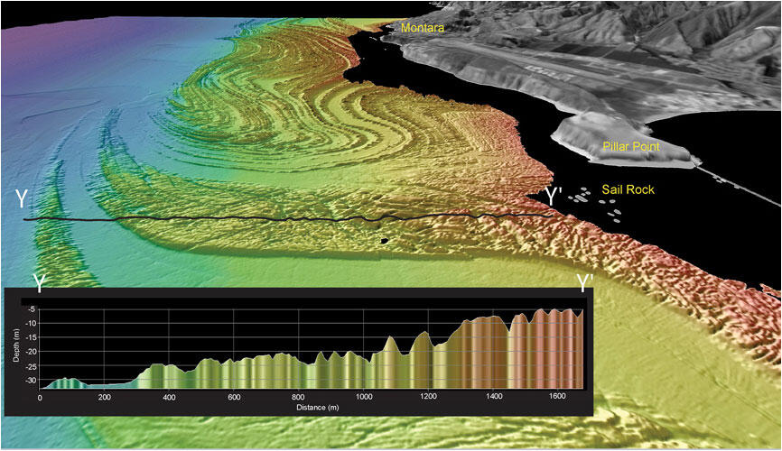
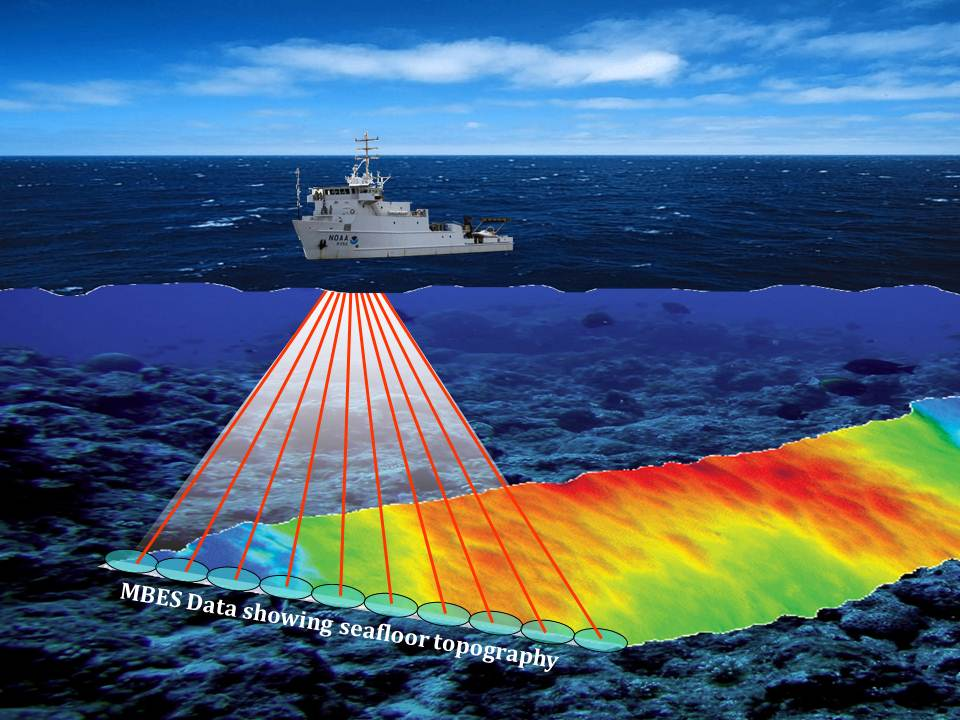
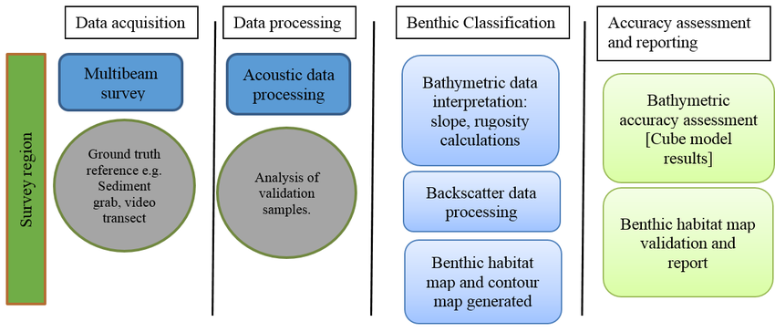

Processing offshore hydrographic survey data to produce accurate and reliable geospatial products for marine engineering and offshore energy projects.
As a Hydrographic Data Processor Grade 1 at Ocean Infinity, I contribute to the processing, quality control and delivery of offshore hydrographic survey data.
My role involves transforming raw survey data into accurate and reliable geospatial information that supports offshore engineering, marine infrastructure and environmental projects.
Working within multidisciplinary teams, I ensure that hydrographic deliverables meet project specifications, quality standards and client requirements while maintaining efficient processing workflows.
Process and organise hydrographic survey datasets from acquisition through final deliverables.
Process Multibeam Echo Sounder (MBES) data and support the creation of accurate bathymetric products.
Perform quality control, noise cleaning and validation to ensure reliable hydrographic datasets.
Support the production of bathymetric surfaces, backscatter products and marine geospatial deliverables.
Collaborate with senior processors, survey teams and project stakeholders to meet project requirements.
Maintain processing logs, quality records and workflow documentation.
Hydrographic data processing, cleaning, quality control and bathymetric surface generation.
Multibeam data processing, editing and validation workflows.
Backscatter processing, mosaicking and seabed data interpretation.
Navigation and positioning data processing for marine survey applications.
Hydrographic acquisition and survey data management workflows.
Spatial analysis, mapping, coordinate systems and geospatial data management.
A structured workflow transforming raw marine survey data into accurate hydrographic and geospatial products.
Collection of multibeam echo sounder, navigation and auxiliary sensor data.
Import and organise raw survey datasets into professional processing environments.
Review positioning data and ensure accurate vessel motion and navigation information.
Apply sound velocity information to improve underwater acoustic measurements.
Remove unwanted noise and artefacts while preserving seabed features.
Validate processed data against project specifications and quality requirements.
Generate bathymetric surfaces, backscatter products and geospatial outputs.

Offshore hydrographic survey environment

Bathymetric data visualization

Multibeam Echo Sounder (MBES) technology

Hydrographic data processing workflow
Processed and quality-controlled offshore hydrographic datasets from acquisition through final geospatial deliverables.
Applied structured QC procedures to ensure hydrographic data accuracy and compliance with project requirements.
Supported the production of bathymetric surfaces, backscatter products and other marine geospatial outputs.
Developed practical experience working with marine survey workflows and offshore geospatial data.
Worked with survey professionals, senior processors and technical teams to achieve project objectives.
Maintained processing records, workflows and documentation supporting efficient project delivery.
{kind=link}
{kind=link}
{kind=link}
{kind=link}